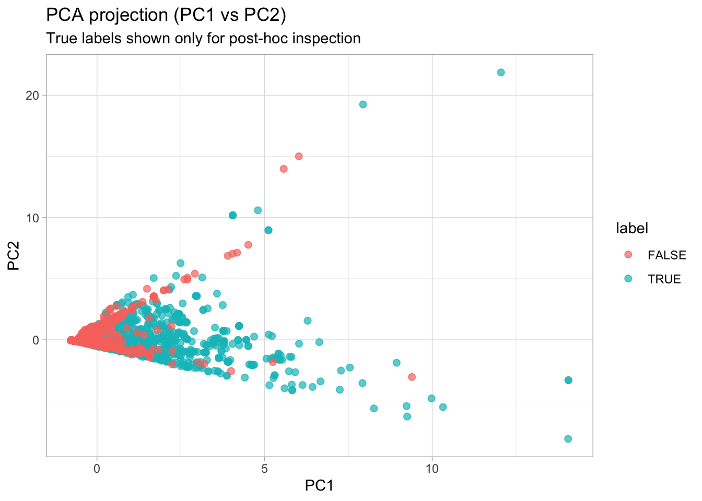
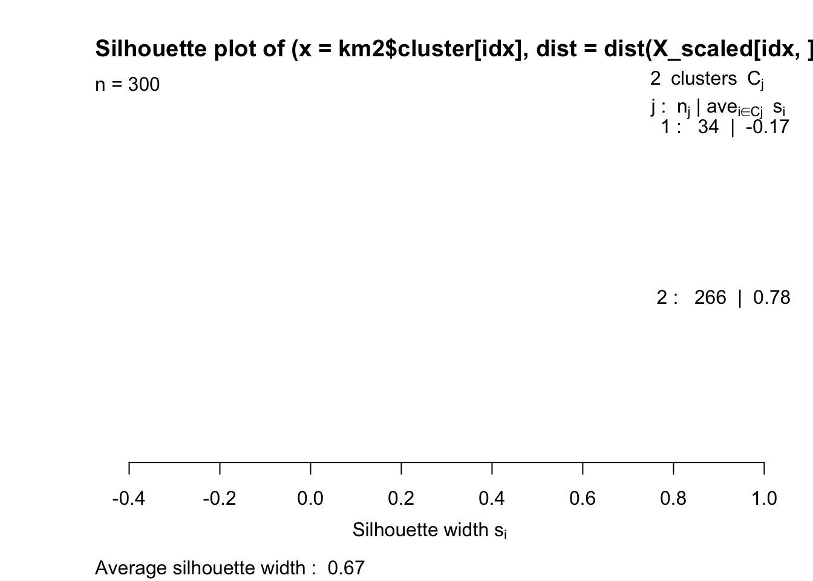
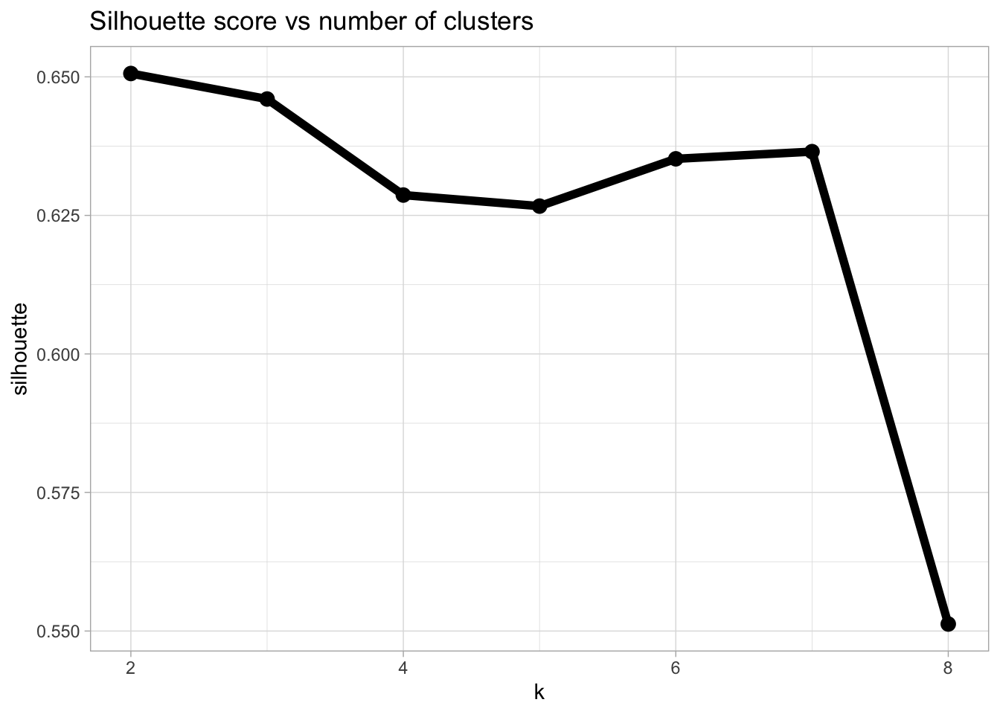

library(tidyverse)
library(cluster) # silhouette
library(factoextra) # PCA / clustering helpersSpam detection (Unsupervised)
PCA + clustering: when we ignore the label
Goal of this section
In the supervised part, we trained classifiers using known labels. Here we do the opposite: we pretend that the label does not exist and try to discover structure in the data using unsupervised methods.
The goal is not performance, but understanding:
- why scaling is crucial for unsupervised methods,
- how PCA helps us see high-dimensional data,
- why clustering results are always hypotheses, not ground truth.
Dataset
We work with a classic spam dataset where:
- rows correspond to individual emails
- columns are numeric text features (e.g., frequencies of certain tokens)
- the last column is a binary label (spam / not spam)
In this section, the label will be used only for evaluation after the fact.
Download
- Dataset:
spam_detection_data.txt
Setup
Loading the data
spam_raw <- read_csv2("../assets/data/spam_detection_data.csv", col_names = TRUE)
spam_raw <- spam_raw %>% mutate(row_id = row_number())
glimpse(spam_raw)Rows: 4,601
Columns: 8
$ `crl,tot` <dbl> 278, 1028, 2259, 191, 191, 54, 112, 49, 1257, 749, 21, 184, …
$ dollar <dbl> 0.000, 0.180, 0.184, 0.000, 0.000, 0.000, 0.054, 0.000, 0.20…
$ bang <dbl> 0.778, 0.372, 0.276, 0.137, 0.135, 0.000, 0.164, 0.000, 0.18…
$ money <dbl> 0.00, 0.43, 0.06, 0.00, 0.00, 0.00, 0.00, 0.00, 0.15, 0.00, …
$ n000 <dbl> 0.00, 0.43, 1.16, 0.00, 0.00, 0.00, 0.00, 0.00, 0.00, 0.19, …
$ make <dbl> 0.00, 0.21, 0.06, 0.00, 0.00, 0.00, 0.00, 0.00, 0.15, 0.06, …
$ yesno <lgl> TRUE, TRUE, TRUE, TRUE, TRUE, TRUE, TRUE, TRUE, TRUE, TRUE, …
$ row_id <int> 1, 2, 3, 4, 5, 6, 7, 8, 9, 10, 11, 12, 13, 14, 15, 16, 17, 1…summary(spam_raw[, 1:6]) crl,tot dollar bang money
Min. : 1.0 Min. :0.00000 Min. : 0.0000 Min. : 0.00000
1st Qu.: 35.0 1st Qu.:0.00000 1st Qu.: 0.0000 1st Qu.: 0.00000
Median : 95.0 Median :0.00000 Median : 0.0000 Median : 0.00000
Mean : 283.3 Mean :0.07581 Mean : 0.2691 Mean : 0.09427
3rd Qu.: 266.0 3rd Qu.:0.05200 3rd Qu.: 0.3150 3rd Qu.: 0.00000
Max. :15841.0 Max. :6.00300 Max. :32.4780 Max. :12.50000
n000 make
Min. :0.0000 Min. :0.0000
1st Qu.:0.0000 1st Qu.:0.0000
Median :0.0000 Median :0.0000
Mean :0.1016 Mean :0.1046
3rd Qu.:0.0000 3rd Qu.:0.0000
Max. :5.4500 Max. :4.5400 Extract the label (last column) and inspect its distribution.
label_df <- spam_raw %>%
transmute(row_id, label = dplyr::pull(., ncol(.) - 1)) %>% # last column before row_id
mutate(label = factor(label))
table(label_df$label)
FALSE TRUE
2788 1813 Creating an unsupervised dataset
We now remove the label and keep only numeric features.
Important: after cleaning (dropping rows / columns), we must keep the label aligned with the remaining rows.
# 2) Label (in your data it is 'yesno' TRUE/FALSE)
label_df <- spam_raw %>%
transmute(row_id, label = factor(yesno))
# 3) Predictors only (drop label, keep row_id)
X_df <- spam_raw %>%
select(-yesno) # keep row_id!
# 4) Make numeric matrix for PCA/k-means (drop row_id)
X_mat <- X_df %>%
select(-row_id) %>%
mutate(across(everything(), as.numeric)) %>%
as.matrix()
# 5) Remove rows with any non-finite values (NA/NaN/Inf)
keep_rows <- apply(is.finite(X_mat), 1, all)
X_mat <- X_mat[keep_rows, , drop = FALSE]
row_id_kept <- X_df$row_id[keep_rows]
# 6) Remove zero-variance columns (otherwise scaling creates NA)
sds <- apply(X_mat, 2, sd)
keep_cols <- is.finite(sds) & sds > 0
X_mat <- X_mat[, keep_cols, drop = FALSE]
# 7) Scale
X_scaled <- scale(X_mat)
stopifnot(all(is.finite(X_scaled)))
# 8) Align label to remaining rows
label_kept <- label_df$label[match(row_id_kept, label_df$row_id)]
stopifnot(length(label_kept) == nrow(X_scaled))PCA: visualizing structure
pca <- prcomp(X_scaled, center = TRUE, scale. = FALSE)
summary(pca)Importance of components:
PC1 PC2 PC3 PC4 PC5 PC6
Standard deviation 1.2818 1.0264 0.9873 0.9268 0.8949 0.8179
Proportion of Variance 0.2738 0.1756 0.1625 0.1431 0.1335 0.1115
Cumulative Proportion 0.2738 0.4494 0.6119 0.7550 0.8885 1.0000Projection onto the first two principal components:
pca_df <- as_tibble(pca$x[, 1:2]) %>%
mutate(label = label_kept)
ggplot(pca_df, aes(PC1, PC2, color = label)) +
geom_jitter(alpha = 0.7, size = 2) +
labs(
title = "PCA projection (PC1 vs PC2)",
subtitle = "True labels shown only for post-hoc inspection"
) +
theme_light()
Interpretation: PCA does not find clusters. It finds directions of maximal variance. If spam and non-spam separate here, the signal is strong. If not, the difference may be weak or hidden in higher dimensions.
k-means clustering
k = 2 (spam vs not spam hypothesis)
set.seed(1)
km2 <- kmeans(X_scaled, centers = 2, nstart = 25)
table(cluster = km2$cluster, label = label_kept) label
cluster FALSE TRUE
1 60 545
2 2728 1268Silhouette analysis
set.seed(1)
idx <- sample(seq_len(nrow(X_scaled)), 300)
sil_small <- silhouette(km2$cluster[idx], dist(X_scaled[idx, ]))
plot(sil_small)
Choosing k systematically
k_grid <- 2:8
sil_scores <- map_dbl(k_grid, function(k) {
km <- kmeans(X_scaled, centers = k, nstart = 25)
mean(silhouette(km$cluster, dist(X_scaled))[, 3])
})
tibble(k = k_grid, silhouette = sil_scores) %>%
ggplot(aes(k, silhouette)) +
geom_line(size = 2) +
geom_point(size = 3) +
theme_light() +
labs(title = "Silhouette score vs number of clusters")
Exercises
Exercise 1: What happens without scaling?
- Run PCA on
Xinstead ofX_scaled. - Compare explained variance and the PC1–PC2 plot.
- Explain the difference in two sentences.
Exercise 2: Are clusters the same as labels?
- For k = 2, inspect
table(cluster, label). - Compute a simple cluster purity.
- Explain why this is not the same as classification accuracy.
Exercise 3: Choosing k
- Find the k that maximizes the silhouette score.
- Inspect the cluster–label table for this k.
- Discuss whether a higher silhouette always means a better solution for the spam detection problem.
Solutions (brief)
Exercise 1 (solution sketch)
Without scaling, variables with larger variance dominate both PCA and k-means. Standardization ensures that all features contribute comparably, regardless of their original scale.